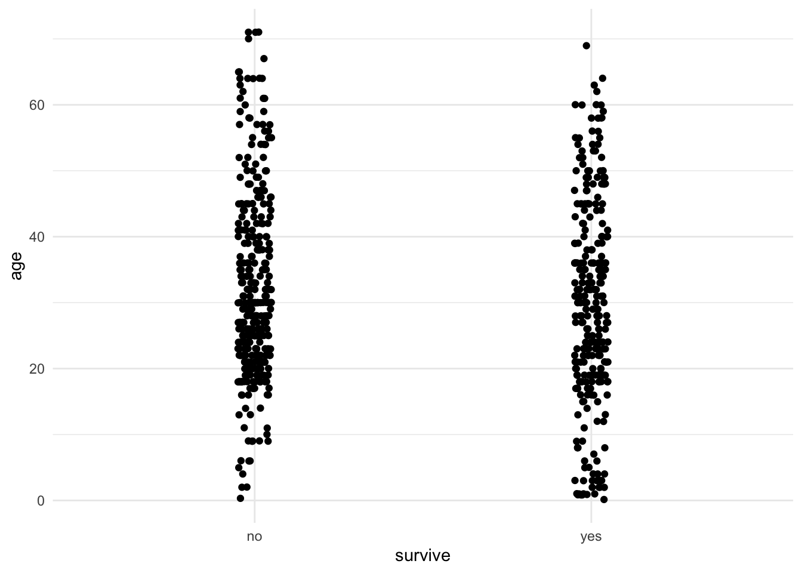
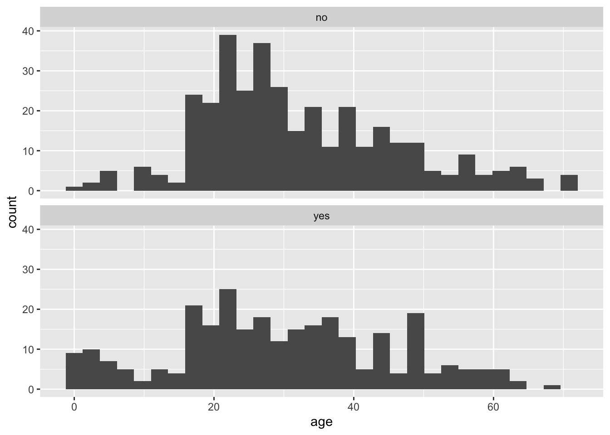
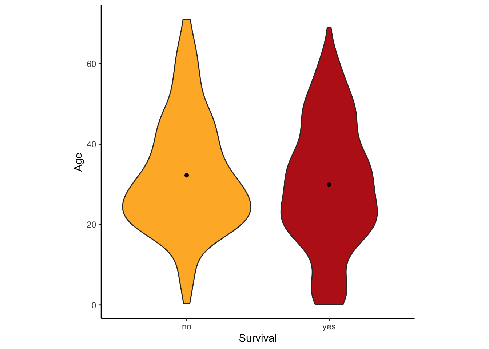

Labs using R:
9. Comparing the
means of two groups
This lab is part of a series designed to accompany a course using The Analysis of Biological Data. The rest of the labs can be found here. This lab is based on topics in Chapters 12 and 13 of ABD.
Learning outcomes
Use strip charts, multiple histograms, and violin plots to view a numerical variable by group
Use the paired t-test to test differences between group means with paired data
Test for a difference between the means of two groups using the 2-sample t-test in R.
Calculate a 95% confidence for a mean difference (paired data) and the difference between means of two groups (2 independent samples of data).
Compare the variances of two groups using Levene’s test.
If you have not already done so, download the zip file containing Data, R scripts, and other resources for these labs. Remember to start RStudio from the “ABDLabs.Rproj” file in that folder to make these exercises work more seamlessly.
Learning the tools
We’ll use the Titanic data set again this week for our examples, so load those data to R.
Also, we will be using ggplot() to make some graphs, so make sure that the package ggplot2 has been loaded. We also will need functions from the package car, so let’s load that as well. (If you haven’t used car before, you may need to install the package.)
## Loading required package: carData##
## Attaching package: 'car'## The following object is masked from 'package:dplyr':
##
## recode## The following object is masked from 'package:purrr':
##
## someWe’ll use the Titanic data set again this week for our examples, so load those data to R.
Strip charts
A strip chart is a graphical technique to show the values of a numerical variable for all individuals according to their groups in a reasonably concise graph. Each individual is represented by a dot. To prevent nearby data points FROM obscuring each other, typically a strip chart adds “jitter”. That is, a little random variation is added to nudge each point to one side or the other to make it individually more visible.
geom_jitter()
In R, one can make strip charts with ggplot() using the geom function geom_jitter(). In the command below, we specify x = survive to indicate the categorical (group) variable and y = age to specify the numerical variable. If we want more or less jitter, we could use a larger or smaller value than 0.05 in the option position_jitter(0.05).
ggplot(titanicData, aes(x = survive, y = age)) + geom_jitter(position = position_jitter(0.05)) + theme_minimal()
One can see from this strip chart that there is a weak tendency for survivors to be younger on average than non-survivors. Younger people had a higher chance of surviving the Titanic disaster than older people.
Multiple histograms
A multiple histogram plot is used to visualize the frequency distribution of a numerical variable separately for each of two or more groups. It allows easy comparison of the location and spread of the variable in the different groups, and it helps to assess whether the assumptions of relevant statistical methods are met.
Plotting age again as a function of survive, we can write:
## `stat_bin()` using `bins = 30`. Pick better value with `binwidth`.## Warning: Removed 680 rows containing non-finite outside the scale range (`stat_bin()`).
We specified the data set titanicData for the function to use. Note that here the numerical variable is entered as the variable on the x axis (x = age). No y variable is specified because that is simply the count of individuals that have that age. The categorical variable is specified in the facet_wrap() function (~ survive). The “facets” here are the separate plots, and facet_wrap() tells R which variable to use to separate the data across the plots.
Notice, for example, that the very youngest people (less than 10 years old, say) are much more likely to be in the group that survived.
Violin plots
Another good way to visualize the relationship between a group variable and a numerical variable is a violin plot.
A violin plot can be made in R using ggplot, using the geom function geom_violin().
ggplot(titanicData, aes(x=survive, y=age, fill = survive)) +
geom_violin() +
xlab("Survival") + ylab("Age") +
theme_classic()+scale_fill_manual(values=c("#FFB531","#BC211A"))+
stat_summary(fun.y=mean, geom="point", color="black")+
theme(legend.position="none")+
theme(aspect.ratio=1)
This version has some extra options thrown in. What is important here is that it uses geom_violin() to specify that a violin plot is wanted and that it specifies the categorial variable ( here survive) and the numerical variable (here age). This graph also added the mean as a dot with the addition of stat_summary(fun.y=mean, geom=“point”, color=“black”)
Two-sample t-test
The two-sample t-test is used to compare the means of two groups. This test can be performed in R using the function t.test(). As we shall see, t.test() actually performs a wide array of related calculations.
As with all other functions in these labs, we will assume here that you have your data in the “long” format; that is, each row describes a different individual and columns correspond to variables. For a 2-sample t-test, two variables are used, one categorical and one numerical. So we assume that there is a column in the data frame indicating which group an individual belongs to, and another column that contains the measurements for the numerical variable of interest.
With this data format, we can most easily give input to the t.test() function using what R calls a “formula”. In a formula, the response variable is given first, followed by a tilde (~), followed by the explanatory variables. With a t-test, the explanatory variable is the categorical variable defining the two groups and the response variable is the numerical variable.
For example, imagine that we want to test whether the individuals which survived the Titanic disaster had the same average age as those passengers who did not survive. For this, the categorical variable is survive and the numerical variable is age. We would write the formula as “age ~ survive”.
To do a 2-sample t-test, t.test() also needs two other pieces of input. You need to specify which data frame contains the data, and you need to specify that you want to assume that the variances of the two groups are equal. (If you specify this assumption, you are telling R to do a classic 2-sample t-test rather than a Welch’s t-test. We’ll see how to do Welch’s next, which allows for unequal variances.)
To specify the data frame to use, we give a value for the argument “data”, such as “data = titanicData”. To tell R to assume that the variances are equal, we use the option “var.equal = TRUE”.
Here is the complete command for this example and the output:
##
## Two Sample t-test
##
## data: age by survive
## t = 2.0173, df = 631, p-value = 0.04409
## alternative hypothesis: true difference in means between group no and group yes is not equal to 0
## 95 percent confidence interval:
## 0.06300333 4.68528476
## sample estimates:
## mean in group no mean in group yes
## 32.24811 29.87396Notice that in the formula here (age ~ survive), we do not need to use the name of the data frame (as in titanicData$age). This is because we are using a different argument to specify which data frame to use (data = titanicData).
The output from t.test() gives a lot of information, which is probably mainly self-explanatory. The title it tells us that it did a Two Sample t-test as we requested. The output gives us the test statistic t, the degrees of freedom for the test (df), and the P-value for the test of equal population means (which in this case is P = 0.044).
Under “95 percent confidence interval,” this output gives the 95% confidence interval for the difference between the population means of the two groups. Finally, it gives the sample means for each group in the last line.
Welch’s t-test
The 2-sample t-test assumes that both populations have the same variance for the numerical variable. As we will see in the Activity section later, the 2-sample t-test can have very high Type I error rates when the populations in fact have unequal variances. Fortunately, Welch’s t-test does not make this assumption of equal variance. (Remember, both methods assume that the two samples are random samples from their respective populations and that the numerical variable has a normal distribution in both populations.)
Calculating Welch’s t-test in R is straightforward using the function t.test(). The command is exactly like that for the 2-sample t-test that we did above, but with the option var.equal set to FALSE.
##
## Welch Two Sample t-test
##
## data: age by survive
## t = 1.9947, df = 570.96, p-value = 0.04655
## alternative hypothesis: true difference in means between group no and group yes is not equal to 0
## 95 percent confidence interval:
## 0.03644633 4.71184176
## sample estimates:
## mean in group no mean in group yes
## 32.24811 29.87396Notice that the output is also very similar to the 2-sample t-test above, except that the first line of the output tells us that R did a Welch’s t-test.
Welch’s t-test (with var.equal = FALSE) is actually the default for t.test(). If this argument is omitted, R will perform a Welch’s test.
Welch’s t-test is nearly as powerful as a 2-sample t-test, but it has a much more accurate Type I error rate for cases when the variances are truly unequal. Its only real disadvantage is that it is more difficult to calculate by hand, but with R it is really a much better test to use in most circumstances.
Paired t-test
The function t.test() can also perform paired t-tests. Remember, a paired t-test is used when each data point in one group is paired meaningfully with a data point in the other group.
The Titanic data set does not include any paired data, so we will use Example 12.2 from Whitlock and Schluter to show how this function works in R. Load the data with read.csv().
These data show the log antibody production of male blackbirds before (logBeforeImplant) and after (logAfterImplant) the birds received a testosterone implant. There is a before and after measure for each bird, so the data are paired.
We can perform the paired t-test on these data with t.test() by specifying the option paired = TRUE. We also need to give the names of the two columns that have the data from the two conditions.
##
## Paired t-test
##
## data: blackbird$logAfterImplant and blackbird$logBeforeImplant
## t = 1.2714, df = 12, p-value = 0.2277
## alternative hypothesis: true mean difference is not equal to 0
## 95 percent confidence interval:
## -0.04007695 0.15238464
## sample estimates:
## mean difference
## 0.05615385Again we get a lot of useful output, and most of it is self-explanatory. R reminds us that it has done a paired t-test, and then gives the test statistic, the degrees of freedom, and the P-value. It gives the 95% confidence interval for the mean of the difference between groups. (It will calculate the difference by subtracting the variable you listed second from the variable you listed first: here that is logAfterImplant – logBeforeImplant.) In this case, the P-value is 0.22, which is not small enough to cause us to reject the null hypothesis.
Levene’s test
Finally, R can calculate many tests to compare the variances of two or more groups. One of the best methods is Levene’s test. It is difficult to calculate by hand, but R makes it easy. The basic version of R does not do Levene’s test, but it is available from the package car with the function leveneTest().
As with other packages you would need to install the package car first (see Lab 2 for instructions), and then use library to load its functions into R.
To use leveneTest(), you need three arguments for the input.
data: the data frame that contains the data
formula: an R formula that specifies the response variable and the explanatory variables
center: how to calculate the center of each group. For the standard Levene’s test, use center = mean
Let’s demonstrate this with the Titanic data, with age as the numerical variable and survive as the group variable.
## Levene's Test for Homogeneity of Variance (center = mean)
## Df F value Pr(>F)
## group 1 3.906 0.04855 *
## 631
## ---
## Signif. codes: 0 '***' 0.001 '**' 0.01 '*' 0.05 '.' 0.1 ' ' 1For these data, the P-value of Levene’s test is P = 0.04855. We would reject the null hypothesis that the group that survived and the group that died had the same population variances for the variable age.
R commands summary

Activities
Investigating robustness
Remember that the two-sample t-test assumes that the variable has a normal distribution within the populations, that the variance of these distributions is the same in the two populations, and that the two samples are random samples. The t-test is fairly robust to violations of its normality assumptions, but it can be very sensitive to its assumption about equal variances. “Robust” means that even when the assumption is not correct, the t-test often performs quite well (in other words, its actual Type I error rate is close to the stated significance level, α).
Open a browser and load the applet at http://shiney.zoology.ubc.ca/whitlock/RobustnessOfT/
This applet will simulate t-tests from random samples from two populations, and it lets you specify the true parameters of those populations.
Equal means, equal standard deviation. Let’s begin by looking at a case when the null hypothesis is true, and when the assumptions of the test are met. The app begins with equal means (both populations set with the sliders at a mean equal to 10), but the default values of the variances are unequal. Use the slider for population 1 to give it a standard deviation equal to 2 (so that it matches population 2—confirm that population 2 has that SD value as well). When the mean and standard deviation parameters are equal between the populations, the two populations will have identical normal distributions and the top graph on the app will seem to only show one curve.
When you change the setting for a parameter on the left, the app will automatically simulate 1000 random samples from each population. For each sample, it will calculate a 2-sample t-test for the null hypothesis that the populations have equal means. With the null hypothesis true and the assumptions met, the Type I error rate ought to be 5%. Is this what you observe? (By chance, you may see some subtle departure from this 5%, because we have only simulated 1000 tests rather than an infinite number.) In this case, both distributions are normal and the variances are equal, just as assumed by the t-test. Therefore we expect it to work well in this case.
Equal means, unequal variance, balanced sample size. Let’s now look at the Type I error rate of the 2-sample t-test when the variance is different between the two populations. Leaving the sample sizes for each group to be the same (at n = 25), set the standard deviation to be 2 to 3 times higher in population 2 than in population 1. (For example, perhaps leave the standard deviation at 1.5 in population 1 and set the standard deviation to 4 in population 2.) What does this do to the Type I error rate? (You should find that the Type I error rate is slightly higher than 5%, but not by much.)
Equal means, unequal variance, unbalanced sample size. The real problems start when the variances are unequal AND the sample size is different between the two populations. The 2-sample t-test performs particularly badly when the sample size is smaller in the population with the higher variance. Let’s try the following parameters to see the problem. For population 1, set the standard deviation to 1.5 and the sample size to 25. For population 2, set the standard deviation to 4.5 and the sample size to 5. What happens to the Type I error rate in this case? Think about what a high Type I error rate means—we wrongly reject true null hypotheses far more often than the stated significance level α = 5%.
Equal means, unequal variance, Welch’s t-test. Finally, let’s look at how well Welch’s t-test performs in this case. Leave the standard deviations and sample size as in the last paragraph, but click the button at the top left by “Welch’s”. This will tell the simulation to use Welch’s t-test instead. Does Welch’s t-test result in a Type I error rate that is much closer to 5%?
Different means, power. (optional) The applet will also allow you to investigate the power of the 2-sample and Welch’s t-tests when the null hypothesis is false. Power is measured by the rate of rejection of the null hypothesis. Compare the power of the tests when the means of population 1 and population 2 are close to one another in value (but still different) with scenarios in which the difference between population means is greater. Explore the effects on power of having a larger sample size instead of a small ample size. Compare power when the population standard deviations are small versus large. If you compare the results of the 2-sample t-test and Welch’s t-test, you should find that the power of Welch’s test is almost as great as that of the 2-sample test, even though the Type I error rate is much better for Welch’s.
Questions
1. In 1898, Hermon Bumpus collected data on one of the first
examples of natural selection directly observed in nature. (We saw this
data set in Week 8 briefly.) Immediately following a bad winter storm,
136 English house sparrows were collected and brought indoors. Of these,
72 subsequently recovered, but 64 died. Bumpus made several measurements
on all of the birds, and he was able to demonstrate strong natural
selection on some of the traits as a result of this storm. Natural
selection has occurred if traits are different between the survivors and
non-survivors.
Bumpus published all of his data, and they are given in the file “bumpus.csv.” Let’s examine whether there was natural selection in body weight from this storm event, by comparing the weights of the birds that survived to those that died.
Plot a graph with multiple histograms for body weight (called “weight_g” in the “bumpus.csv” data set), comparing the surviving and nonsurviving groups (given in the variable “survival”). Do the distributions look approximately normal? Do the variances look approximately equal?
Use t.test() to do a Welch’s t-test to look for a difference in mean body weight between the surviving and dying birds.
What is the 95% confidence interval for the difference in mean weight of surviving and dying birds?
Use a Levene’s test to ask whether the surviving and dying birds had the same variance in weight.
2. Let’s return to the data about ecological footprint in the
data set “countries.csv”. As you remember, the ecological footprint of a
country is a measure of the average amount of resources consumed by a
person in that country (as measured by the amount of land required to
produce those resources and to handle the average person’s waste). For
many countries in the data set, information is available on the
ecological footprint in the year 2000 as well as in 2012. Use a paired
t-test to ask whether the ecological footprint has changed over
that time period.
Plot a histogram showing the difference in ecological footprint between 2012 and 2000. (Note, you will probably need to create a new vector containing the differences, and use hist() to make the graph.)
Use t.test() to do a paired t-test to determine whether the ecological footprint changed significantly between 2000 and 2012.
Interpret your result. Is there evidence that the ecological footprint changed over that time? If so did it increase or decrease?
3. A common belief is that shaving causes hair to grow back
faster or coarser than it was before. Is this true? Lynfield and
McWilliams (1970) did a small experiment to test for an effect of
shaving. Five men shaved one leg weekly for several months while leaving
the other leg unshaved. (The data from the shaved leg has the word
“test” in the variable name; the data from the unshaved leg is labeled
with “control.”)
At the end of the experiment, the researchers measured the difference in leg hair width and the hair growth rate on each of the legs. These data are given in “leg shaving.csv”.
Perform a suitable hypothesis test to determine whether shaving affects hair thickness.
How big is the difference? Find the 95% confidence interval for the difference between shaved and unshaved legs for hair thickness.
4. In the last lab, we collected data on the lengths of your
second and fourth fingers (2D and 4D – your TA will tell you where to
find the data). (If you are doing these outside of a class setting,
anonymized data based on a previous classes’ answers is available as
“fingerLengths.csv”.) As mentioned last time, the 2D:4D ratio partly
reflects the amount of testosterone that a human is exposed to as a
fetus during the period of finger development. As such, we might expect
there to be a difference between men and women in the 2D:4D ratio. Use
these data to calculate the 2D:4D ratio (index finger length divided by
ring finger length) on the right hands.
Make an appropriate graph to show the relationship between sex and 2D:4D ratio of the right hand.
Test for a difference in the mean 2D:4D ratio between men and women.
What is the magnitude of the difference? Compute the 95% confidence interval for the difference in means.